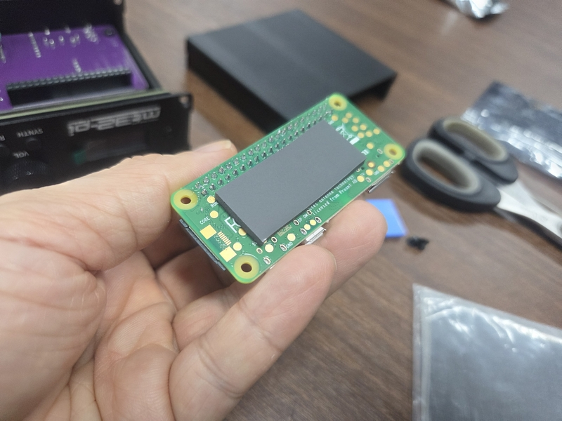
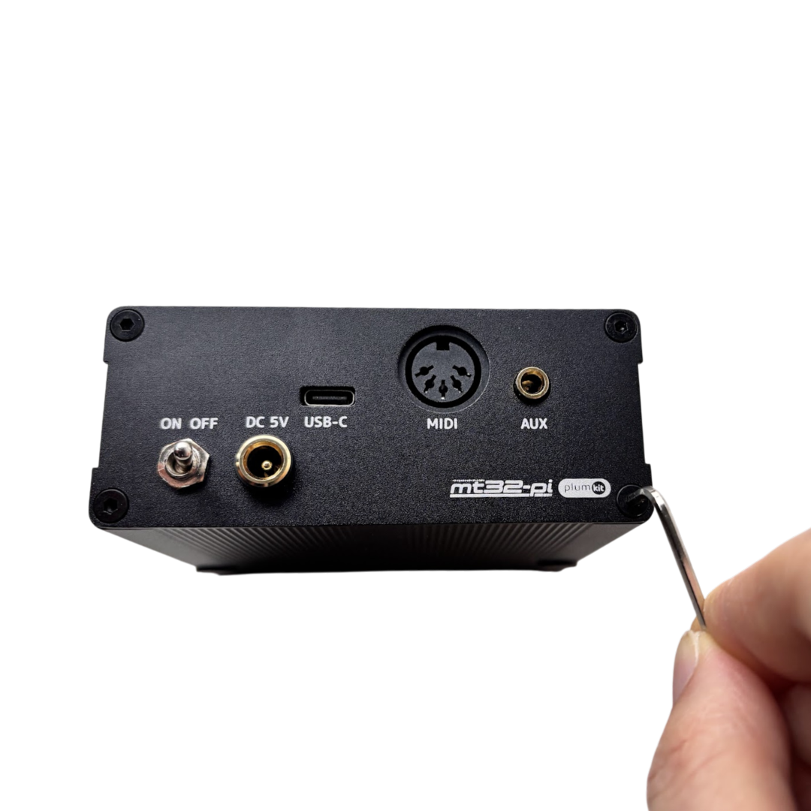
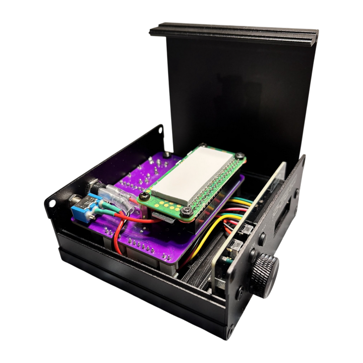
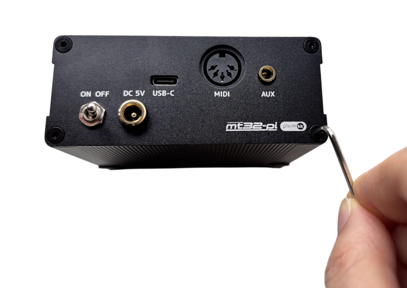

MT32-Pi 퀵 가이드
환영합니다! 아래 순서대로 따라해 주세요.
1. 하드웨어 설치
STEP 1. Pi Zero 2WH에 절연시트 붙이기

칩셋 위에 절연 시트를 중앙에 맞춰 붙여주세요.
STEP 2. 케이스 아래쪽 볼트 2개를 풀기

STEP 3. 케이스 아래 덮개 열기

STEP 4. Pi Zero 2WH를 아래 방향으로 꽂기

※ 40핀 헤더 방향 주의 (어긋나지 않게 꾹 눌러주세요)
STEP 5. 케이스 아래 덮개를 닫고 볼트로 고정하기


하판을 덮고 동봉된 볼트를 꽉 조여주세요.
2. 펌웨어 다운로드
아래 버튼을 눌러 전용 펌웨어를 받으세요.
⬇️ 펌웨어 다운로드 (수정필요)※ 다운로드된 압축 파일을 SD카드에 그대로 풀어주세요.